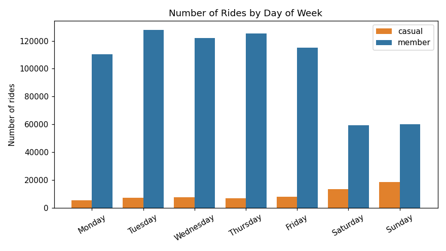
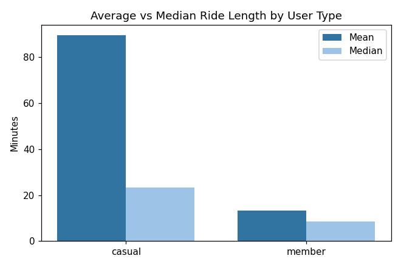
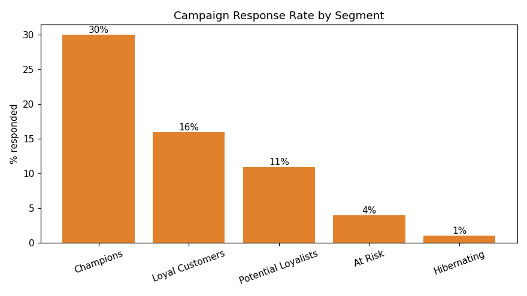
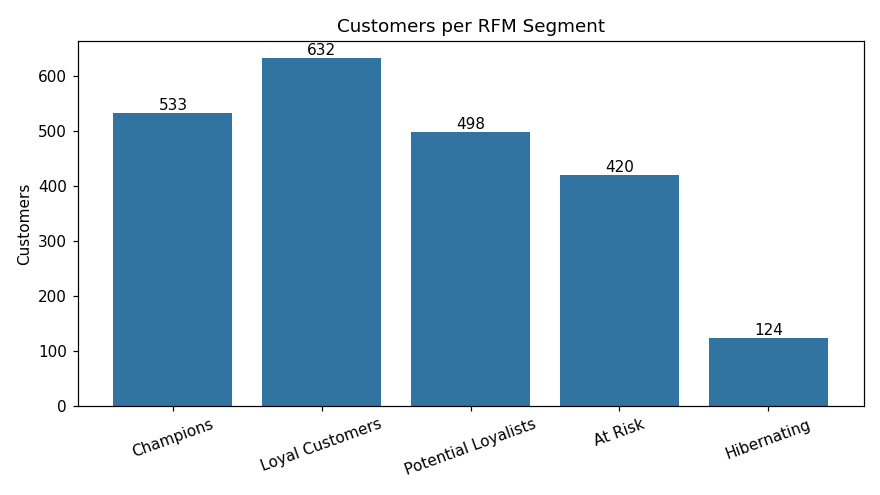

From operations to analytics — turning real-world data into clear, useful answers.
Power BI · Excel · SQL · Data storytellingQuestion: How do annual members and casual riders use the bikes differently?


Question: How do we segment customers so marketing can target the right people?


Not just using AI — I direct AI agents to research, build, test, ship, and run real products and content pipelines, with human-in-the-loop gates before anything irreversible.
I'm Elyas Zulqarnain — an administrative and operations professional with over 10 years of experience across education, real estate, and public-sector organizations, in roles from branch manager to school administrator. I hold a B.Sc. in Marketing from the University of Cape Coast, and I've recently completed Google's Data Analytics and Digital Marketing & E-commerce Professional Certificates.
Years of running teams, workflows, and reporting taught me that good decisions start with clear information. I'm now bringing that operations mindset to data — building hands-on projects that turn messy, real-world data into findings people can actually act on. This portfolio is where I share that work as I grow into a data career. Based in Abu Dhabi, UAE, and open to data analytics and related roles.